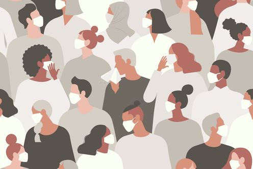
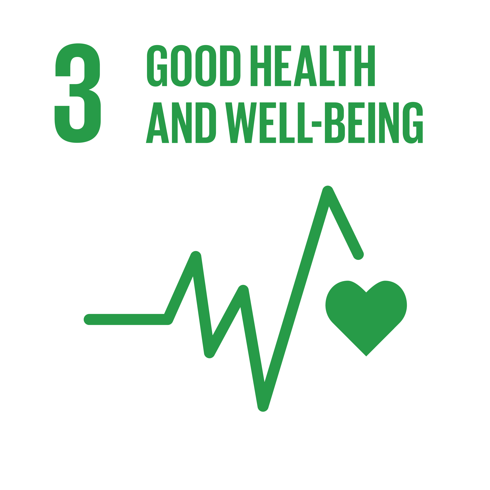
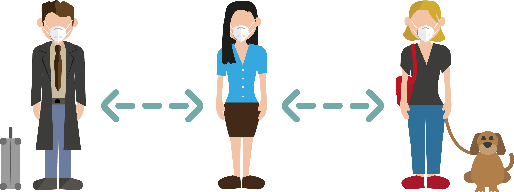
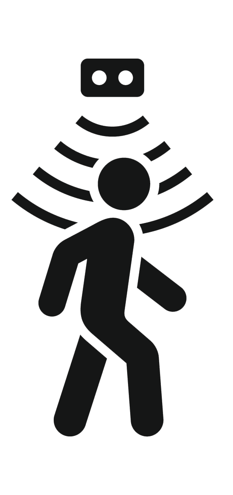
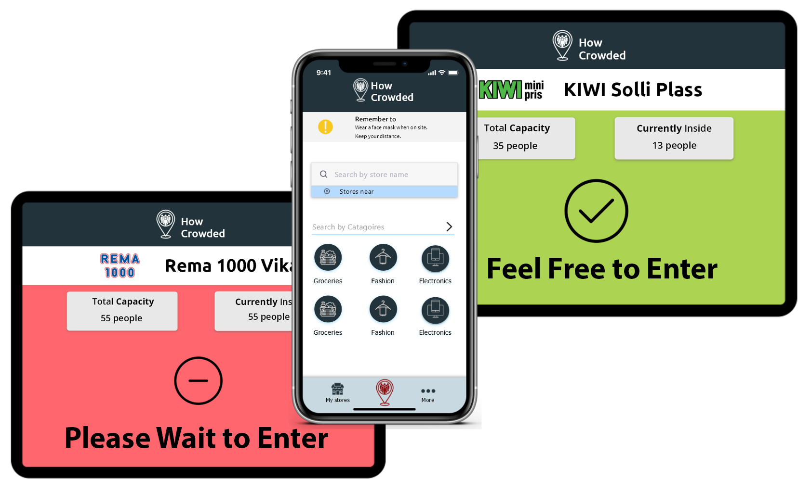

List of References
References of content:
- United Nations
Title of page:"Sustainable Development Goals"
Date accessed: 05/11/2020
- United Nations
Title of page: "Goal 3: Ensure healthy lives and promote well-being for all images"
Date accessed: 05/11/2020
- World Health Organization
Title of page: "Coronavirus disease advice for the public"
Date accessed: 09/11/2020
References of images:
-
Logo
Image preview:

The logo is a composite image created in Luncay.
People Icon
Artist: Musmellow
Location Icon
Artist: Qomariyah
Date accessed: 10/11/2020
- Distancing image on front page
Image preview:

Artist: Nuthawut
Date accessed: 17/11/2020
The original picture has been altered by removing the background in Adobe PS
Used with licence
- Crowd Image on Front Page
Image preview:

Artist: Angelina Bambina
Date accessed: 19/11/2020
- Arrow Image on Front Page
Image preview:
Artist: Alexander Kahlkopf
Date accessed: 19/11/2020
Image has been altred in Adobe Photoshop too change color
- UN goal 3 on Front Page and Challenge Page
Image preview:

Organization: UN
Date accessed: 17/11/2020
Image has been altred in Adobe Photoshop change color and removing backround
- Covid Measures on Challenge Site
Image preview:

Artist: Annalisa Batista
Date accessed: 17/11/2020
- House illustration on Challenge Site
Image preview:

Artist: Stephanie Curry
Date accessed: 17/11/2020
Image has been altered in Adobe Photoshop cropping and adding text
- Distancing Illustration on Solution Site
Image preview:

Artist: Cromaconeptovisual
Date accessed: 17/11/2020
Image has been altered in Adobe Illustator removing background
- Person Icon on Soultion Site
Image preview:
Artist: unknown
Date accessed: 10/11/2020
Image has been altered in Adobe Photoshop from black to white
- Company Icon on Soultion Site
Image preview:
Artist: unknown
Date accessed: 10/11/2020
Image has been altered in Adobe Photoshop from black to white
- Sensor Illustation on Prototype Site
Image preview:

Artist: Janis Abolins
Date accessed: 27/12/2020
Used with licence
- Prototype Illustations on Prototype Page
Image preview:

The prototype is a composite image created in ??????
Link til icon hvis du ikke har laget selv?
- Link Icon on References Site
Image preview:
Artist: unknown
Date accessed: 27/12/2020
Image has been altered in Adobe Photoshop from black to white